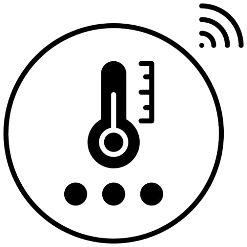
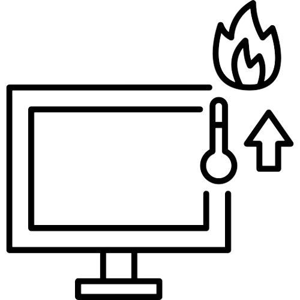

Somos uma startup que nasceu com a missão de garantir a segurança da temperatura de todos os tipos de carnes congeladas, da produção até a entrega ao consumidor.
O futuro do setor alimentício descubra como ajudamos empresas a evitar perdas, garantir qualidade e eficácia e entrar em conformidade com as normas sanitárias.


A CryoTech traz dados e indicadores em tempo real para o controle de qualidade de carnes em indústrias, supermercados, centros de armazenamento e transportes, auxiliando a garantir que tudo está na temperatura ideal. Ganhe visibilidade total.